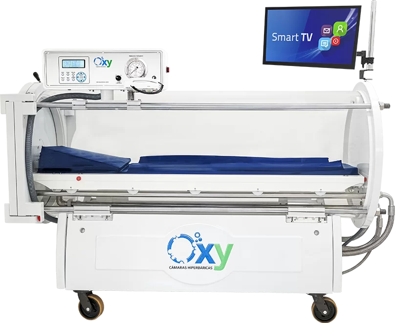

A Clínica Flávia Franco é especializada em pré e pós-operatórios, com foco em medicina regenerativa de alta performance. Protocolos personalizados que unem ciência, inovação e cuidado humanizado.
Entenda como a câmara hiperbárica acelera a cicatrização e regeneração celular.

Pacientes Atendidos
Anos de Experiência